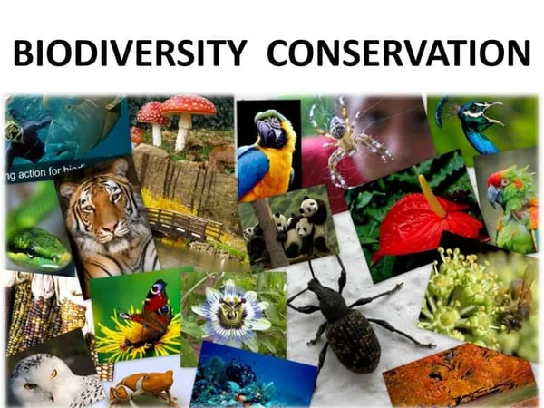
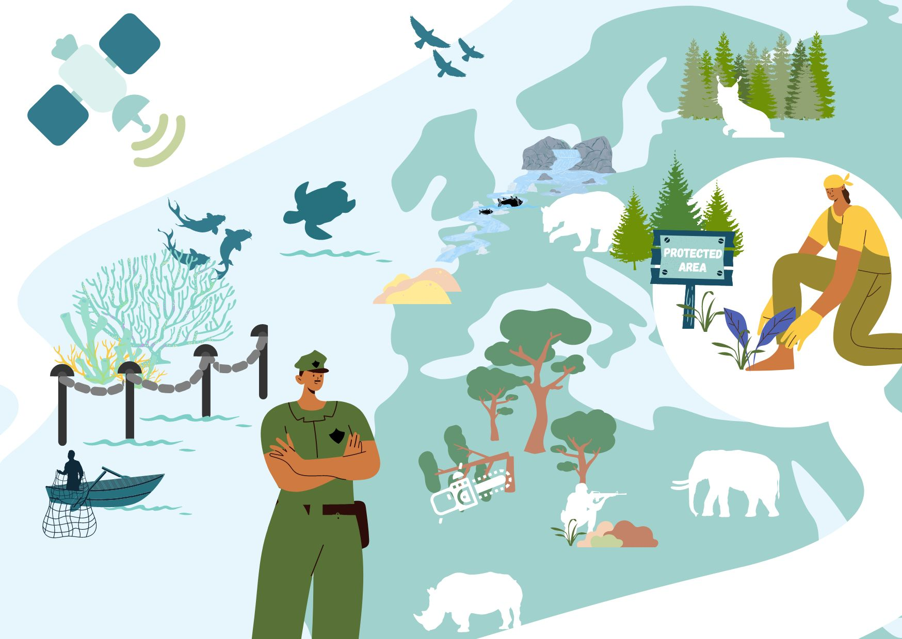
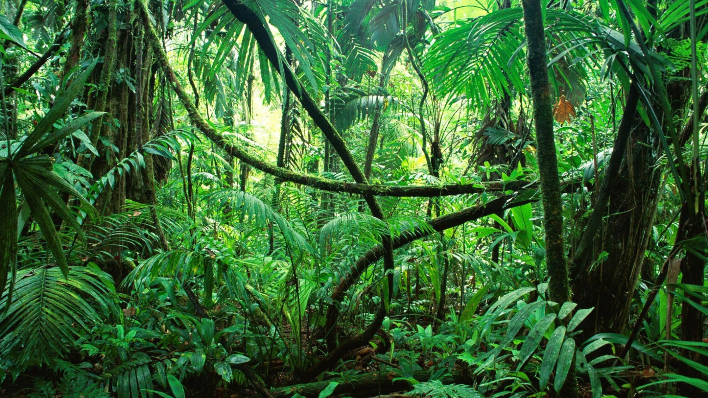
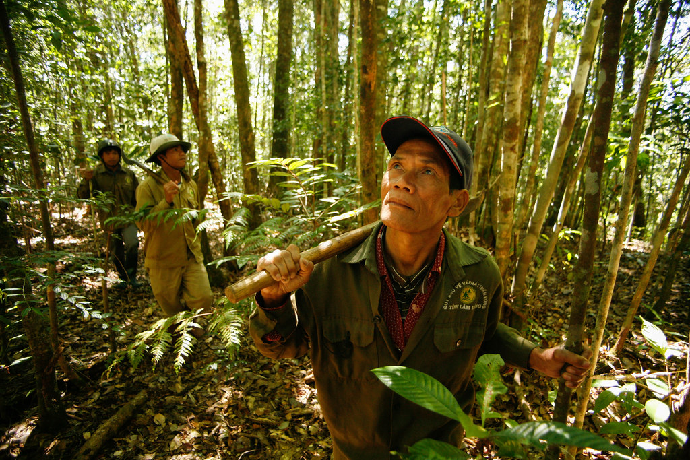

What is Conservation of Biodiversity?
The variability of life on Earth is called Biodiversity. Biodiversity takes into account all the living organisms present on Earth. Healthy and good biodiversity indicate a healthy and good ecosystem. Hence, biodiversity is very important. A healthy ecosystem also includes the availability of pure water, pure air, healthy land, a good climate, and the availability of nutrients on Earth. Therefore, biodiversity conservation plays an important role in the quality of life of all living organisms. The protection and management of biodiversity in obtaining sustainable development of resources are called Biodiversity conservation. There are three major objectives of Biodiversity conservation: Preservation of the diversity of species. Sustainability of species and ecosystem. Maintaining life-supporting and essential ecological processes.

What is Loss of Biodiversity?
A number of factors like pollution, erosion, evolution, urbanization, industrialization, population, and depletion lead to the loss of biodiversity. Loss of biodiversity is very harmful to the ecosystem as it indicates either loss of species, or reduction of species in a natural habitat, or both of them on a global level. Loss of biodiversity has a poor impact on the ecosystem. Loss of biodiversity directly impacts the ecosystem and food chains in it. It affects agriculture and weakens the resistance to natural disasters like floods, drought, etc.

Just Help And Change Your Life Forever
There were some researches in different countries in 2013 and the scientist found out, that the help can increase our life. It is possible to decrease the mortality by 22%. How much do you need to live longer? If you help the others up to 100 hours per year, you will reduce the risk of the death by 28%. But it does not matter how much time you spend while helping other people. You can do it 2 hours or 125- but you will get the positive result. The only main thing, which you need to know, that this help should be systematic. Another researches have shown, that students improved their blood tests only help each other 1 time a week and the positive aspects of this activity were shown after some years.
Definition of Biodiversity Conservation
“Protection, restoration, and management of biodiversity in order to derive sustainable benefits for present and future generations.”. Or, it can also be defined as, “the totality of genes, species, and ecosystems in a defined area.”.
Need for Biodiversity Conservation
Various types of conservation methods ensure a healthy ecosystem. A healthy ecosystem means a clean and healthy environment, smooth running food chains, availability of resources, and so on. Human beings are also majorly dependent on the environment for basic necessities and wellbeing. We are interdependent on a variety of species of plants and animals for a living. Hence it is very important to conserve these species and their ecosystems which are threatened by many human activities. A threat to biodiversity poses a threat to humankind. It can be the cause of various grave problems like pollution, habitat loss, resource exploitation, climate change, species extinction, disease outbreak, and so on. For economic and various life support reasons, it is very important to protect and preserve biodiversity.
Reason for Conservation of Biodiversity
An area with higher abundant species has a more stable environment when compared to a lower species abundance area. Humans directly depend on different species of plants for numerous needs. Similarly, people depend on various animals and microbes for different reasons. Due to various reasons such as the loss of habitat, over-exploitation of resources, climatic changes, pollution, invasive exotic species, diseases, hunting, etc biodiversity is being lost. It is very important to conserve biodiversity as it provides various economic and ethical benefits and adds aesthetic value.